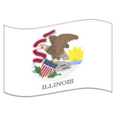

USÂ 12 Aberdeen, WA
USÂ 12 Aberdeen, WA USÂ 30 Astoria, OR
USÂ 30 Astoria, OR USÂ 30 Atlantic City, NJ USÂ 40 Atlantic City, NJ
USÂ 30 Atlantic City, NJ USÂ 40 Atlantic City, NJ USÂ 20 Boston, MA USÂ 03 Cambridge, MA
USÂ 20 Boston, MA USÂ 03 Cambridge, MA USÂ 14 Chicago, IL
USÂ 32 Chicago, IL
USÂ 66 Chicago, IL
 USÂ 42 Cleveland, OH USÂ 46 Columbia, NJ
USÂ 42 Cleveland, OH USÂ 46 Columbia, NJ USÂ 92 Daytona Beach, FL
USÂ 92 Daytona Beach, FL USÂ 12 Detroit, MI
USÂ 12 Detroit, MI USÂ 29 Ellicott City, MD USÂ 28 Eugene, OR USÂ 02 Everett, WA
USÂ 29 Ellicott City, MD USÂ 28 Eugene, OR USÂ 02 Everett, WAUSÂ 89 Flagstaff, AZ
USÂ 46 Fort Lee, NJ USÂ 09 Laurel, DE
USÂ 09 Laurel, DE USÂ 101 Los Angeles, CA USÂ 27 Miami, FL USÂ 41 Miami, FL USÂ 94 Miami, FL
USÂ 101 Los Angeles, CA USÂ 27 Miami, FL USÂ 41 Miami, FL USÂ 94 Miami, FL USÂ 13 Morrisville, PA
USÂ 13 Morrisville, PA USÂ 05 New Haven, CT USÂ 22 Newark, NJ
USÂ 05 New Haven, CT USÂ 22 Newark, NJ USÂ 62 Niagara Falls, NY USÂ 07 Norwalk, CT USÂ 50 Ocean City, MD
USÂ 62 Niagara Falls, NY USÂ 07 Norwalk, CT USÂ 50 Ocean City, MD USÂ 17-1 Petersburg, VA USÂ 44 Plymouth, MA
USÂ 17-1 Petersburg, VA USÂ 44 Plymouth, MA USÂ 04 Portsmouth, NH USÂ 06 Provincetown, MA USÂ 33 Richmond, VA USÂ 48 San Jose, CA USÂ 66 Santa Monica, CA USÂ 26 Seaside, OR USÂ 48 Strasburg, VA
USÂ 04 Portsmouth, NH USÂ 06 Provincetown, MA USÂ 33 Richmond, VA USÂ 48 San Jose, CA USÂ 66 Santa Monica, CA USÂ 26 Seaside, OR USÂ 48 Strasburg, VAUSÂ 64 Teec Nos Pos, AZ
USÂ 101 Tumwater, WA USÂ 98 West Palm Beach, FL USÂ 17 Winchester, VA USÂ 21 Wytheville, VA USÂ 82 Alamogordo, NM USÂ 04 Albany, NY (4 km)
USÂ 82 Alamogordo, NM USÂ 04 Albany, NY (4 km) USÂ 65 Albert Lea, MN USÂ 69 Albert Lea, MN
USÂ 65 Albert Lea, MN USÂ 69 Albert Lea, MN USÂ 63 Ashland, WI
USÂ 63 Ashland, WI USÂ 70 Atlantic, NC
USÂ 70 Atlantic, NC USÂ 89 Babb, MT USÂ 10 Bay City, MI
USÂ 89 Babb, MT USÂ 10 Bay City, MIUSÂ 34 Berwyn, IL (5 km)
USÂ 06 Bishop, CA USÂ 99 Blaine, WA USÂ 73 Bonner Springs, KS
USÂ 73 Bonner Springs, KSUSÂ 60 Brenda, AZ
 USÂ 91 Brigham City, UT
USÂ 91 Brigham City, UT USÂ 77 Brownsville, TX USÂ 83 Brownsville, TX
USÂ 77 Brownsville, TX USÂ 83 Brownsville, TXUSÂ 25 Brunswick, GA
USÂ 82 Brunswick, GA
USÂ 99 Calexico, CA USÂ 78 Cash, AR USÂ 09 Champlain, NY
USÂ 78 Cash, AR USÂ 09 Champlain, NY USÂ 52 Charleston, SC USÂ 78 Charleston, SC
USÂ 52 Charleston, SC USÂ 78 Charleston, SC USÂ 37 Chattanooga, TN USÂ 72 Chattanooga, TN USÂ 74 Chattanooga, TN USÂ 76 Chattanooga, TN USÂ 22 Cincinnati, OH USÂ 24 Clarkston, MI
USÂ 37 Chattanooga, TN USÂ 72 Chattanooga, TN USÂ 74 Chattanooga, TN USÂ 76 Chattanooga, TN USÂ 22 Cincinnati, OH USÂ 24 Clarkston, MI USÂ 65 Clayton, LA USÂ 43 Columbia, TN USÂ 41 Copper Harbor, MI
USÂ 65 Clayton, LA USÂ 43 Columbia, TN USÂ 41 Copper Harbor, MIUSÂ 32 Council Bluffs, IA
 USÂ 25 Covington, KY USÂ 58 Cumberland Gap, TN USÂ 75 Dallas, TX USÂ 80 Dallas, TX
USÂ 25 Covington, KY USÂ 58 Cumberland Gap, TN USÂ 75 Dallas, TX USÂ 80 Dallas, TXUSÂ 55 Davenport, IA
 USÂ 73 Dawson, NE
USÂ 73 Dawson, NE USÂ 05 Derby Line, VT USÂ 57 Eagle Pass, TX
USÂ 05 Derby Line, VT USÂ 57 Eagle Pass, TX USÂ 95 Eastport, ID USÂ 54 El Paso, TX USÂ 62 El Paso, TX USÂ 85 El Paso, TX
USÂ 95 Eastport, ID USÂ 54 El Paso, TX USÂ 62 El Paso, TX USÂ 85 El Paso, TX USÂ 33 Elkhart, IN USÂ 44 Ellenville, NY USÂ 19 Erie, PA
USÂ 33 Elkhart, IN USÂ 44 Ellenville, NY USÂ 19 Erie, PAUSÂ 36 Estes Park, CO
USÂ 93 Eureka, MT USÂ 13 Fayetteville, NC USÂ 68 Findlay, OH USÂ 08 Forest Lake, MN USÂ 01 Fort Kent, ME USÂ 27 Fort Wayne, IN USÂ 81 Fort Worth, TX (10 km)
USÂ 01 Fort Kent, ME USÂ 27 Fort Wayne, IN USÂ 81 Fort Worth, TX (10 km) USÂ 85 Fortuna, ND USÂ 48 French Camp, CA
USÂ 85 Fortuna, ND USÂ 48 French Camp, CAUSÂ 70 Globe, AZ
USÂ 34 Granby, CO
USÂ 38 Greeley, CO
USÂ 54 Griggsville, IL
 USÂ 49 Gulfport, MS USÂ 48 Hancock, MD USÂ 87 Havre, MT USÂ 02 Houlton, ME USÂ 96 Houston, TX USÂ 21 Hunting Island, SC USÂ 51 Hurley, WI USÂ 91 Idaho Falls, ID USÂ 53 International Falls, MN USÂ 71 International Falls, MN USÂ 90 Jacksonville Beach, FL USÂ 23 Jacksonville, FL
USÂ 49 Gulfport, MS USÂ 48 Hancock, MD USÂ 87 Havre, MT USÂ 02 Houlton, ME USÂ 96 Houston, TX USÂ 21 Hunting Island, SC USÂ 51 Hurley, WI USÂ 91 Idaho Falls, ID USÂ 53 International Falls, MN USÂ 71 International Falls, MN USÂ 90 Jacksonville Beach, FL USÂ 23 Jacksonville, FL USÂ 56 Kansas City, MO USÂ 01 Key West, FL USÂ 71 Krotz Springs, LA USÂ 53 La Crosse, WI USÂ 59 Lancaster, MN USÂ 51 LaPlace, LA USÂ 59 Laredo, TX USÂ 96 Laredo, TX USÂ 42 Louisville, KY USÂ 23 Mackinaw City, MI USÂ 31 Mackinaw City, MI USÂ 72 Memphis, TN (4 km) USÂ 35 Michigan City, IN
USÂ 56 Kansas City, MO USÂ 01 Key West, FL USÂ 71 Krotz Springs, LA USÂ 53 La Crosse, WI USÂ 59 Lancaster, MN USÂ 51 LaPlace, LA USÂ 59 Laredo, TX USÂ 96 Laredo, TX USÂ 42 Louisville, KY USÂ 23 Mackinaw City, MI USÂ 31 Mackinaw City, MI USÂ 72 Memphis, TN (4 km) USÂ 35 Michigan City, INUSÂ 84 Midway, GA
USÂ 18 Milwaukee, WI USÂ 55 Minneapolis, MNUSÂ 24 Minturn, CO
 USÂ 43 Mobile, AL USÂ 45 Mobile, AL USÂ 57 Moore, TX
USÂ 43 Mobile, AL USÂ 45 Mobile, AL USÂ 57 Moore, TX USÂ 48 Morgantown, WV USÂ 64 Nags Head, NC USÂ 94 Naples, FL USÂ 98 Natchez, MS USÂ 11 New Orleans, LA USÂ 61 New Orleans, LA USÂ 20 Newport, OR USÂ 08 Norway, MI USÂ 75 Noyes, MN USÂ 26 Ogallala, NE USÂ 38 Omaha, NE USÂ 28 Ontario, OR USÂ 45 Ontonagon, MI
USÂ 48 Morgantown, WV USÂ 64 Nags Head, NC USÂ 94 Naples, FL USÂ 98 Natchez, MS USÂ 11 New Orleans, LA USÂ 61 New Orleans, LA USÂ 20 Newport, OR USÂ 08 Norway, MI USÂ 75 Noyes, MN USÂ 26 Ogallala, NE USÂ 38 Omaha, NE USÂ 28 Ontario, OR USÂ 45 Ontonagon, MI USÂ 18 Orin, WY
USÂ 18 Orin, WY USÂ 97 Osoyoos, BC
USÂ 97 Osoyoos, BCUSÂ 84 Pagosa Springs, CO
USÂ 15 Painted Post, NY USÂ 19 Palmetto, FL USÂ 40 Park City, UT USÂ 81 Pembina, ND USÂ 29 Pensacola, FL USÂ 49 Piggott, AR USÂ 03 Pittsburg, NH USÂ 69 Port Arthur, TX USÂ 96 Port Arthur, TX USÂ 87 Port Lavaca, TX USÂ 52 Portal, ND USÂ 67 Presidio, TX USÂ 17 Punta Gorda, FL USÂ 16 Rapid City, SD USÂ 68 Reidland, KY USÂ 79 Round Rock, TX USÂ 02 Rouses Point, NY USÂ 11 Rouses Point, NY USÂ 79 Russellville, KY USÂ 63 Ruston, LA
USÂ 16 Rapid City, SD USÂ 68 Reidland, KY USÂ 79 Round Rock, TX USÂ 02 Rouses Point, NY USÂ 11 Rouses Point, NY USÂ 79 Russellville, KY USÂ 63 Ruston, LAUSÂ 67 Sabula, IA
USÂ 95 San Luis, AZ
USÂ 37 Sellersburg, INUSÂ 77 Sioux City, IA
USÂ 31 Spanish Fort, AL USÂ 56 Springer, NM USÂ 02 Saint Ignace, MI USÂ 92 Saint Petersburg, FL USÂ 07 Swanton, VT USÂ 35 Teays Valley, WV USÂ 96 Tenaha, TXUSÂ 80 Tybee Island, GA
USÂ 36 Uhrichsville, OH USÂ 90 Van Horn, TX USÂ 58 Virginia Beach, VA (15 km) USÂ 60 Virginia Beach, VA (15 km) USÂ 15 Walterboro, SC USÂ 97 Weed, CA USÂ 10 West Fargo, ND USÂ 50 West Sacramento, CA USÂ 83 Westhope, ND USÂ 48 Weston, WVUSÂ 93 Wickenburg, AZ
USÂ 17-1 Wilmington, NC USÂ 74 Wrightsville Beach, NC USÂ 76 Wrightsville Beach, NC USÂ 61 Wyoming, MN USÂ 14 Yellowstone National Park, WY USÂ 16 Yellowstone National Park, WY